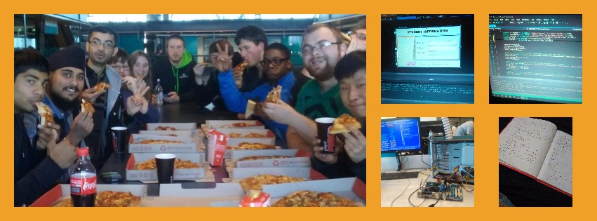

21/12/2015
A Year in Review
The beginning of this year marked a huge milestone for me — my first steps onto the rollercoaster
of emotions, challenges and achievements that is university. In just twelve short months, I've spent countless
hours working on assignments, attending classes, and working through unexpected issues; all of these
challenges culminating in a growing bank of knowledge and experience which will benefit me for years to come.
Not only have I developed some solid foundational skills in software engineering, but I have established a
vast range of other proficiencies in technological fields, personal and interpersonal areas.
The biggest personal and academic improvement I achieved this year was my sense of time management.
During my high school years, I often struggled to motivate myself adequately to complete assignments in a
time-effective manner, sometimes not even starting them until a week before their due date. This trap of
procrastination led me to experience unneeded stress and drastically impacted my ability to achieve at a
high standard. This year I have made a huge effort in making sure that work and assignments are completed
in a timely fashion through the use of a planner, and breaking assignments into smaller, more easily achieved,
tasks. I am proud to say that over the course of this year, almost every assignment was complete at least a
week before it was due, leaving me less stressed and able to cope with the fast-paced atmosphere of university better.
The biggest challenge I faced this year was adapting to the independence of learning at university. After
being confined to the expectations of school and reliance on teachers for thirteen years, the responsibility
and freedom of being a college student was both liberating and terrifying. As I soon learned, at university you
are in charge of your own learning — assignments and study are done on your own terms. While this meant that I
had a huge amount of flexibility in my studies, it also meant that I had to force myself to set aside time for
my work, lest I start falling behind. It taught me a lot about responsibility and time management, and balancing
my schedule was unnecessarily difficult for me. I found that I would often overwork myself, pushing myself to
reach higher standards of work, while neglecting my mental wellbeing. Eventually I settled to a point of acceptance.
My work was still of excellent quality and I attempted every aspect to the best of my abilities, but I no longer
stressed myself out over achieving lower grades than I wanted. Through this, I was able to achieve my goal
of having an A- average overall, while maintaining my sanity.
This year, I most enjoyed going to tech workshops in the Auckland area. These were not affiliated with my
university, but were instead found by myself through Facebook groups/pages and meetup.com. I was nervous before
both of these events, mainly because I was attending alone, but also because of my age — at nineteen, I was
among the youngest of attendees at both events. The first event I attended was an HTML/CSS workshop for women in
their twenties, hosted by "Vend" using gather workshops curriculum. I spent several hours chatting to and learning
with other women from the tech industry, and eventually left with a fully functional (basic) website. I felt very
welcome and gained valuable skills from the workshop; the next one cannot come soon enough! The second workshop
I went to this year was hosted by LiveOps and focussed on learning the functional programming language, Clojure.
Over the course of two days I spent hours playing around with the language and talking to men and women in the industry.
I particularly enjoyed comparing Clojure to C#, which I had been learning for several months already. I loved both
experiences and can't wait to join several more meetups in 2016.
Of all of my achievements this year, I am most proud of Saviour of Katar. I spent countless hours tinkering with the
project and in the end, it was all worth it. I learned plenty of valuable lessons from my work with it, like learning to
keep track of my progress, the importance of backups, and the ability to know where to stop. I enjoyed designing the
characters, and especially recording and editing the voice clips. Learning to code in Action Script 3 was a challenge,
and this was not at all helped by my choice of project — designing a game was certainly ambitious, but I am
more than pleased with the results. I found learning about events and event handlers to be exceptionally
interesting and I was pleasantly surprised to encounter them once again in Software Engineering 1B when we began to
work with interfaces. Overall, the project was a huge success and a worthy addition to my growing portfolio.
Next year I am looking forward to pursuing my insatiable interest in designing and building software, as well
as attending more industry events and meeting new people. I have the beginnings of a project planned — I hope
to extend my knowledge into the android realm and code my own app — but I have plenty of time to hone my skills
before it is time to return to university in 2016. While it seems far away right now, I know that the time will pass
in the blink of an eye, and soon enough I will be swamped in thousands of lines of code once again — but then,
honestly, I wouldn't have it any other way.
